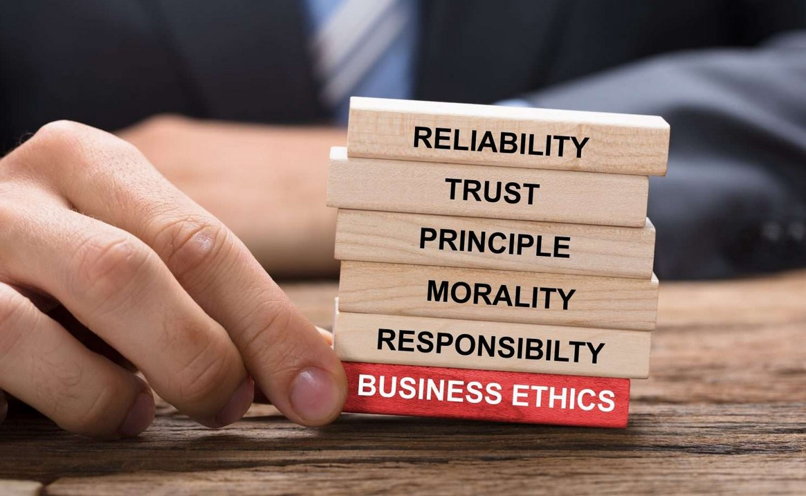

IB Docs (2) Team
IB Docs (2) Team

Ethics

"Being good is good business."
- Dame Anita Roddick (1942 - 2007), Founder of The Body Shop
What is the meaning of ethics?
Starter Activity - An ethical dilemma?

You are driving along in your two-seater sports car on a cold, wet, and stormy night.
You pass by a bus stop, and you see three people waiting for the bus:
1. An old lady who looks as if she is about to die.
2. An old friend who once saved your life.
3. The perfect partner you have been dreaming about.
Which one would you choose to offer a ride to, knowing that there can only be one passenger in your two-seater sports car? And why?
Think carefully before you continue reading ...
This is a moral/ethical dilemma that was once actually used as part of a job application for management trainees at the multinational retailer Marks & Spencer. The task was intended to be used to judge the cognitive thinking of the applicants in a customer-focused business.
You could pick up the old lady, because she is going to die, and thus you could save her life. This suggests the job applicant is focused on customer care.
Or you could take the old friend because he once saved your life, and this would be the perfect chance to pay him back. Choosing this option suggests loyalty.
However, you may never be able to find your perfect dream partner again... this option might suggest the applicant is a motivated and driven manager who sets out to achieve his/her goals.
The story goes that the candidate who was hired (out of over 2,000 applicants) had no trouble coming up with an answer.
He simply answered:
"I would give the car keys to my old friend, and let him take the lady to the hospital. Then I would stay behind and wait for the bus with the woman of my dreams."
Sometimes, we gain more if we are able to give up our stubborn thought limitations.
Ethics is the discipline or study of moral philosophy. In the context of business management, ethics can be defined as the moral codes of conduct that drive business behaviour. Ethical business behaviour is what is deemed by society to be morally acceptable, i.e. what is “right”. By contrast, unethical business behaviour is what society regards as being immoral, unjust and unfair, i.e. what is “wrong”.
The UK's Institute of Business Ethics uses the following definition:
"Business ethics is the application of ethical values to business behaviour."
The concept of ethics is multifaceted as what is considered right or wrong is dependent on the views and cultural norms of different people, societies, and countries. For example, the Second Amendment to the United States Constitution, passed in 1791, protects the individual right to keep and bear arms (armaments or guns). This is deemed as important to the American people, although in most other parts of the world there are alternative views on the rights to owning armed weapons.
Every business decision has moral implications to some extent as this will impact different stakeholder groups in different ways. The consequences of business decisions can be significant for internal and external stakeholders and society as a whole.
Ethics can affect all aspects of business management and decision-making. For example:
Should employers allow workers to have tattoos? Should there be a law about exposing tattoos in the workplace?
For quality assurance purposes, should parents be allowed into schools to observe their child(ren) being taught?
Should schools ban high sugar and high-energy drinks, such as Coca-Cola, Red Bull and Lucozade?
Is it ethical for professional sportspeople to earn $200,000+ per week in countries where the average salary is around $30,000 per year?
Is it ethical for senior executives to receive end-of-year bonuses that are more than double their employee’s annual salary?
Is it ethical for cinemas/theatres to raise their prices (by using surge pricing) during school holidays? Why is it generally accepted that cinemas and theatres get away with charging premium prices for their popcorn, drinks and snacks?
Similarly, to what extent is it immoral that airline companies can charge customers much higher prices for air travel during school holidays, such as during the Christmas or the summer break?
Should employment laws be enforced across the globe to prevent discrimination against race, gender, marital status, age, religion and sexual orientation? Why/not?
To what extent can the private fee-paying schools and universities that chose not to reduce their tuition fees, during nationwide lockdown rules due to the Coronavirus pandemic in 2020, justify their decision?
In March 2022, P&O Ferries made all 800 of its employees redundant without notice, in an attempt to "fire and rehire". The company chose instead to hire staff via an agency for about a fifth of the UK's national minimum wage. Is it ethical for a business to fire and rehire without prior notice to its workforce?
Is it fair / ethical that women - across the world - are paid less than men for doing essentially the same work? Whilst there may be historical or cultural reasons for the gender pay gap, why do such disparities still exist in the 2020s? Watch this Netflix video about why women are paid less than men (on average), which features Hillary Clinton and Anne-Marie Slaughter who discuss the cultural norms at the centre of the worldwide gender pay gap, including the so-called "motherhood penalty."
Examples of content from the IB Business Management syllabus that allows for the exploration of ethics as one of the four core concepts include the following:
Unit 1.1 What is a business?
Unit 1.2 Business entities (for-profit and non-profit organizations, including social enterprises)
Unit 1.3 Business objectives (including ethical objectives and corporate social responsibility)
Unit 1.4 Stakeholders
Unit 1.5 Growth and evolution
Due to potentially unethical business practices, the government may need to intervene to protect the community. This is covered under the Legal and/or Political factors in a STEEPLE analysis (Business Management Toolkit). Government intervention is needed as businesses are not always willing and/or able to react and respond to ethical issues in a socially desirable way.
For example, many government place legislation on the advertising and sale of tobacco products. In Canada, for instance, Health Canada (the government division responsible for helping Canadians to maintain and improve their health) passed a law in November 2019 requiring cigarette producers to strip off their logos and designs and adopt “drab brown” as the default colour for all tobacco brands. This was part of the Canadian government’s attempt to reduce the appeal of such “deadly products” and to discourage young teens from smoking.
Source: Global NewsUnit 2.1 Introduction to human resource management (including demographic change, change in labour mobility, immigration, flexitime, and the gig economy)
Unit 2.3 Leadership and management
Unit 2.4 Motivation and demotivation (in theory and practice)
Unit 2.7 Industrial relations (employer and employee relations) (HL only)
Unit 3.4 Final accounts (Profit and loss account and the balance sheet)
Unit 3.9 Budgets (HL Only)
Unit 4.2 Marketing planning
Unit 4.4 Market research
Unit 4.5 The seven Ps of the marketing mix (such as penetration pricing, predatory pricing, and social media marketing)
Unit 4.6 International marketing (HL only)
Unit 5.1 The role of operations management (including sustainability issues)
Unit 5.7 Crisis management and contingency planning (HL Only)
Unit 5.8 Research & Development (HL Only)
Unit 5.9 Management information systems (HL only) (such as Artificial intelligence, Big Data, and Digital Taylorism)
Examples of unethical business practices

Most decisions in an organization have an element of business attached to them. Managers and business owners often wonder whether they should focus on maximizing profits above all other objectives. Examples of business decisions that have an unethical or immoral dimension include the following:
The exploitation of employees, suppliers, and/or customers, such as paying extremely low wages for long hours of work in order to reduce the firm’s costs of production and increase its profits. The same applies to deliberately paying employees late or delaying payments made to suppliers.
The exploitation and neglect of the natural and local environment, such as by increasing profits in the short-term by using more polluting production methods or less sustainable production techniques.
Financial dishonesty towards investors (deliberately misreporting value in the final accounts), employees (discrimination based on gender or race and so forth), or the government (under-declaring the amount of tax that should be paid).
Pester power - the use of direct marketing techniques aimed at children (advertising products directly to young children, so that they pester their parents into buying those products).
Chief executives and senior directors receiving substantial pay raises, bonuses, and perks (such as first class flights) while other workers in the organization are made redundant or forced to accept salary cuts.
Investing in a company that manufactures weapons or tests chemicals on animals.
Feeding genetically modified food to cattle and other animals to speed up their growth.
Purchasing managers taking bribes from a supplier or other contractor to place an order with another organization.
Employing child labour to reduce costs compared to employing adults and paying fair amounts of wages and salaries.
Producing potentially dangerous products with the hope that no one in the society finds out.
Watch this commercial from Ariel, which attempts to get fathers to share the load (housework):
Watch this 10-minute video about US supermarket food wastage, which suggests about 40% of the groceries sold in US supermarkets never get consumed:
Case Study 1 - Unethical marketing practices
Pester power - the controversial influence (which stems from advertising) that children have over purchases made by adults. Children frequently nag parents to buy them the latest toys, electronic devices, movies, and computer games. Marketers have exploited parental weakness by targeting ‘must have’ purchases at children.
Confusion marketing - the use of tactics that deliberately confuse the customer so that it is easier to guide (or mislead) them into making a purchase. This controversial strategy is often used by providers of financial services, supermarkets and mobile telephone network companies, where pricing options are so varied with complicated choices, thus making price comparisons literally impossible.
Ambush marketing - the planned attempt by a business to associate itself with an event without incurring the costs of being an official sponsor. Nike, for example, deliberately chose advertising slots during TV coverage of the football World Cup (Adidas being the official sponsor for the 2006, 2010, 2014 and 2018 FIFA World Cup events). It gains maximum exposure at the cost of the official sponsors. Viewers are often confused about who the official sponsors are.
Infiltration marketing - marketers contributing to blogs, tweets and online chat rooms by acting as ordinary customers. They might write about receiving excellent customer service or being highly satisfied with the purchase of a company’s products, when in fact they are actually marketing their own products as personal endorsements.
Pop-up adverts are Internet advertisements that are randomly and automatically launched in a small window on top of another webpage. Market research has suggested that these adverts are highly annoying but not easy to ignore or avoid. Marketers have extended this strategy to children’s websites and online games where adverts appear before users are able to access the website or progress to the next stage of the game.
Case Study 2 - Bad businesses?
"The time is always right to do what is right."
- Martin Luther King Jr. (1929 - 1968), American civil rights activist
It has been suggested that "business ethics" is an oxymoron, as the business of business is to earn a return on investment for the owners. Here are some examples of businesses that would probably be seen by most people as being unethical (although ethics and morals are subjective in their very nature).
Bikinis and Sports Bar & Grill - founded in Texas, USA in 2006, this fast food chain focuses on four factors that the CEO claims is recession-proof: beer, food, sports and sex (the servers all wear bikinis and cowboy boots). Doug Guller, founder and CEO of the company, has even trademarked the term "Breastaurant". The chain's menu includes the usual bar and grill food items like burgers, tacos, and chicken wings. At its peak, the company earned in excess of $25 million in annual sales. However, the company went bankrupt in December 2018.
Heart Attack Grill - founded Arizona, USA in 2005, this fast food chain relies on waitresses dressed as nurses and doctors to serve their customers. The company's philosophy is to serve fast food so bad for your health that is would shock you, as a customer - essentially, burgers and related products that are very high in fat, sugar, and cholesterol. So, if eaten regularly, food from Heart Attack Grill would literally cause a heart attack. Its largest burger is a 32 ounces (910g) beefburger (about 8,000 calories) and its fries are cooked in lard fat. Ironically, perhaps, the company was founded by Jon Basso who was a personal trainer and fitness fanatic prior to setting up Heart Attack Grill.
BeautifulPeople.com is an online dating service established in Denmark in 2002. Applicants to the website have to be voted in or out - based on their physical looks - by existing members of the opposite sex, who are given up tp 48-hours to do so. The website and service has attracted much controversy and criticism due to its policy of only allowing people who are perceived to be (voted in) attractive and good looking. The website was launched in the UK and USA in 2005 and went global in 2009. According to its website, only 1 in 5 applicants get admitted by existing registered members. The company has been known for removing thousands of members from the website for gaining weight.
SpiceJet, an Indian low-cost airline carrier, has been heavily criticised for using what is deemed to be ageist, racist, and sexist recruitment adverts for cabin crew staff. The person specifications on the company's website stated that applicants for the flight-attendant positions must be aged between 18 and 27 years old, at least 155cm tall, and of a weight “in proportion to height”. The job advert also stated that candidates must be unmarried and “with an unblemished complexion and good body language.” You can read more about this case study in The Economist here.
One of the most famous case studies of unethical business behaviour is the Volkswagen diesel scandal. The German car maker installed emissions software on more than 10.5 million cars worldwide that allowed VW vehicles to pass environmental standards regulated by environmental protection agencies. In test mode, VW vehicles were fully compliant with the law about emissions levels. However, when driving these vehicles normally, it was discovered that the emissions were actually up to 40 times higher than the government’s limit. Official estimates report that the diesel scandal cost Volkswagen around $35 billion in fines - a record for the motor industry - and a tarnished international brand name.
In July 2020, easyJet was reported to intentionally use the absenteeism and sickness records of pilots in the airline company's plans to make over 700 job cuts. There are many reasons why workers might take sick leave from work, often beyond the control of the individual. Labour unions and critics argued that such a plan would risk the safety of passengers and crew because unwell staff would report for work in order to avoid being made redundant by the British airline. EasyJet blamed the collapse in air travel on the coronavirus pandemic.
In July 2020, Cadbury's announced it would reduce the size of all its chocolate bars sold in multipacks. The reason given was health related as the calorie count for each chocolate bar would be reduced to no more than 200 calories each when sold as a four-pack. However, the prices will not change. Chocolate fans took to social media to denounce the latest example of a business practice known as "shrinkflation" - when manufacturers reduce the weight of their products without reducing the price, so consumers end up paying relatively more for the product (i.e. paying the same amount for less content) Consumers were sceptical about this change being more about Cadbury's wealth than consumers' health.
Cadbury's has been accused of 'shrinkflation'
In March 2022, P&O Ferries announced via a short pre-recorded Zoom that it was making all 800 employees redundant with immediate effect. They were replaced with cheaper staff from a third party agency. The company is owned by DP World, an Emirati multinational logistics company based in Dubai, United Arab Emirates. DP World had declared record profits in 2022. Watch the news coverage of this case study here:
Case Study 3 - Leading by example
Ethical behaviour is not only applicable to businesses, but to individuals too. The ethical acts of the people who represent an organization can have profound implications on the firm's corporate image. Here's one example.
In July 2020, Sadio Mané, a professional footballer player who plays for Premier League club Liverpool and the Senegal national football team was spotted by fans carrying a cracked iPhone. Mané (born 1992) is reported to be on a contract earning him approximately £11.5 million per year (around $15.5 million - or a staggering $42,534 per day!)
When quizzed about why he hadn't replaced his iPhone, Mané's response was this:
"Why would I want 10 Ferraris, 20 diamond watches and 2 jet planes? What would that do for the world? I starved, I worked in the fields, I played barefoot, and I didn't go to school. Now I can help people. I prefer to build schools and give poor people food or clothing. I have built schools and a (football) stadium; we provide clothes, shoes, and food for people in extreme poverty. I give 70 euros per month to all people from a very poor Senegalese region in order to contribute to their family economy. I do not need to display luxury cars, luxury homes, trips, and even planes. I prefer that my people receive a little of what life has given me."
As Harriet Jackson Brown Jr. once said, "Remember that the happiest people are not those getting more, but those giving more". H. Jackson Brown Jr. is an American author best known for his book "Life's Little Instruction Book", which was a New York Times bestseller (1991 - 1994).
Case Study 4 - Coca-Cola and Plastic waste
Coca-Cola is the world’s most successful consumer drinks company, with over $40 billion in sales revenue (which equates to $109,589,041 every day of the year!). However, this also means the company is the planet’s largest plastic polluter.
Although the multinational giant is often associated with fuelling child obesity, the company is increasingly being linked with plastic waste and pollution, with more than 100 billion plastic bottles produced each year – that is the equivalent of 273,972,602 plastic bottles every day of the year!
In response to negative media exposure, the company’s global chief executive, James Quincey, stated that the Coca-Cola Company aims to recover every plastic bottle that the company sells, and to use 50 per cent of this for new bottles, by 2030. The company also announced that it would replace the plastic shrinkwraps used in multipacks with 100 per cent recyclable cardboard.
Case Study 5 - Business ethics and the Coronavirus pandemic
"When you have more than enough, build a longer table, not a higher fence". - Unknown
The social, political and economic impacts of the global coronavirus pandemic in 2020 was felt throughout the world, with every industry affected by the deadly disease. However, this did not stop many businesses from engaging in ethical business practices by giving back to the community and supporting those most in need. Some examples of ethical business practices and corporate social responsibilities during this time include:
Italian car manufacturers Fiat and Alfa Romeo waived car finance payments (those paying for their cars in instalments over a pre-agreed time period) for up to seven months if their customers had lost their job due to the coronavirus pandemic.
Jack Ma (Founder of Alibab.com) donated tens of millions of dollars of his own money for coronavirus test kits and masks that were shipped to the USA and a number of emerging (economically developing) countries.
In a joint collaboration, American Airlines and Hyatt hotels announced in May 2020 that it would offer free vacations to New York City healthcare workers after coronavirus pandemic as a "thank you" gift. The companies said that more than 4,000 healthcare workers in the city would qualify for a three-day trip to a variety of destinations in the US and the Caribbean once it became safe for them to travel. Read more about this story here from the USA Today.
In July 2020, during the summer holidays with many areas under lockdown rules in the UK, Clarks - the British multinational shoe retailer - announced its scheme for free replacement school shoes if a child grew out of their shoes by the end of February 2021. Understandably, the new replacement school shoes cannot cost more than the old pair.
Deliveroo and Uber offered free food and deliveries to healthcare workers.
Former professional England football player and Manchester United Football Club's Gary Neville closed his two Manchester hotels but kept all his staff on full pay. He gave up the rooms in his hotels to National Health Service (NHS) staff workers - completely free of charge.
Morrison's (one of the UK's largest supermarket chains) donated over £10 million (more than $13 million) to food banks in the country to help underprivileged and vulnerable members of society.
Qatar Airways offered more than 100,000 free air tickets to frontline healthcare workers as a way to express the company's gratitude to healthcare professionals. The free tickets could be claimed and used as soon as travel restrictions were eventually lifted.
In May 2020, many hotels in the UK, including the infamous Savoy Hotel in London, joined a scheme to offer two-night hotel breaks for all ICU (intensive care unit) frontline healthcare workers; they were given up to 12 months to redeem this offer.
In June 2020, Vodafone UK announced it would give all NHS (National Health Service) staff and care workers (at care homes for the elderly) free mobile phone network access plus unlimited data for 6 months.
Eric Yuan (CEO of Zoom) gave away the commercial (premium) version of his company's highly popular videoconferencing software to schools, completely free of charge, in order to help the hundreds of millions of educators and students around the world affected by school closures.
InThinking providing all schools with completely free access to all of its content, in order to support teachers and students throughout the period of school closures (March to July 2020). InThinking Business Management extended free access to teachers from across the world until October 2020.
Case Study 6 - Price gouging during the COVID-19 pandemic
As the Covid-19 pandemic (coronavirus pandemic) spread throughout the world, there was public outrage in many countries where some retailers increased prices beyond what was deemed to be unreasonable and unethical for many essential products such as hand sanitiser, toilet paper, rice, pasta, flour, and personal protective equipment (PPE). For example, in the UK, face masks were being sold for around 2,000% above their average retail price prior to the pandemic and national lockdown.
This tactic is known as price gouging and occurs when a business substantially raises the price of a product due to a sudden and significant increase in demand. However, it can be difficult if not subjective to determine what makes a price increase substantial (excessive) or unfair. After all, PPE and staple food products become more scarce due to higher pent-up consumer demand and business closures during the pandemic (which reduces market supply of such products). Crises such as natural disasters or infectious diseases often cause sudden increases in demand for such essential goods, leading to accusation of price gouging.
Case Study 7 - Culture, Ethics and Gender inequalities in India
Increasing women’s rights, such as ownership of land in rural areas, can help cut poverty and boost agricultural output in a country like India where dependence on agriculture and the primary sector is high. India’s Census figures show that 65 per cent of the total female workers (almost two thirds of the female working population) in India are engaged in agriculture.
However, land holdings by women remained restricted to only 15 per cent in north Indian and between 30 and 35 per cent in south India. The contribution of women towards agricultural output can be substantially improved by increasing access to private property resources and by changing inheritance laws to allow women to inherit land.
Challenge students to consider the ethical as well as cultural dimensions of gender inequalities, not just in India but across the world. What are the major benefits to individuals and societies from the reduction or removal of gender inequalities?
Case Study 8 - Gender equalities in Rwanda
Rwandan entrepreneur at work
Rwanda is one of the smallest nations in Africa. The country has enjoyed strong economic growth rates, creating new business opportunities and lifting many people out of poverty. Rwanda ranks number one in terms of highest female representation in parliament. It is one of only three countries in the world with a female majority in the national parliament (Bolivia and Cuba are the other two countries).
Rwanda also ranks in the top 5 countries for gender equality with one of the world's highest female labour force participation ratios. The Rwandan government is committed to ensuring equal rights for women (and men) in the country's continued pursuit of national development
Case Study 9 - Volkswagen Diesel Scandal
One of the worst cases of unethical corporate conduct is the infamous Volkswagen diesel scandal. The German car producer had installed emissions software on more than 500,000 diesel cars in the USA and around 10.5 million more cars worldwide that allowed VW's vehicles to pass environmental standards set by the likes of the USA’s Environmental Protection Agency (EPA). In test mode, the VW diesel vehicles were fully compliant with all of the EPA’s emissions levels. However, when driving these cars normally, it was discovered that the emissions from the vehicles were actually up to 40 times higher than the government’s limit.
Volkswagen was subsequently fined for its unethical business practices. Estimates vary, but the VW diesel scandal cost the company around $35 billion in fines alone, let alone damage to its corporate image.
Case Study 10 - Burger King's "Women Belong in the Kitchen" tweet backfires
Watch this short video clip from Reuters about Burger King's failed “Women belong in the kitchen” campaign in the UK which coincided with International Women’s Day in March 2021.
To read more about this case study, click the eye icon below.
On 8th March 2021 (International Women's Day), Burger King's attempted to highlight gender disparities in the restaurant and catering industry by using a provocative tweet, which seemed to have backfired. The tweet was intended to be a humorous attempt at raising awareness of the gender disparity and promoting scholarships for female employees in the industry.
Burger King's follow-up tweets included “If they want to, of course. Yet only 20% of chefs are women. We're on a mission to change the gender ratio.” However, the campaign proved to be a marketing blunder for many customers and members of the public who never got past the first tweet, which was posted for several hours beforehand, attracting unwanted comments and feedback for Burger King.
One influencer commented "The engagement on your original tweet - which, again, is literally just a sexist trope - is 527% *higher* than the tweet announcing the scholarship program. Way more people are seeing you validate sexism on #InternationalWomensDay than are learning about your scholarship program."
Burger King's social media team spent the rest of the day issuing explanations and apologies. One tweet read "We hear you. We got our initial tweet wrong and we’re sorry. Our aim was to draw attention to the fact that only 20% of professional chefs in UK kitchens are women and to help change that by awarding culinary scholarships. We will do better next time." The original tweet was also finally removed.
The Burger King Foundation’s Helping Equalize Restaurants (HER) Scholarship will give two female employees a grant of $25,000 each to be used towards culinary education.
Source: adapted from Forbes
Case Study 11 - Amazon Prime: To renew or not renew? That is the question...
In 2023, the Federal Trade Commission (FTC) in the US accused Amazon of using deceptive tactics to enroll customers in auto-renewing Amazon Prime subscriptions and making it challenging to cancel their subscription. The FTC filed a lawsuit claiming manipulative website designs and that Amazon had coerced customers into signing up for auto-renewing its Prime subscriptions during purchases, while also making it difficult to opt out.
The complex cancellation process was criticized by the FTC for violating US consumer protection laws. The FTC filed a court order to change Amazon's practices and impose financial penalties. This is the FTC's third recent action against Amazon. Earlier in 2023, Amazon was fined $25 million for breaching child privacy laws (by keeping recordings that children made on Alexa). The company was also fined $5.8 million for privacy violations by Ring, the doorbell company that Amazon acquired in 2018, by giving employees unrestricted access to customer videos.
ATL Activity 1 (Thinking skills) - To ban or not to ban? That is the question...
In June 2023, The Guardian announced a complete global ban on gambling advertising on all of its media platforms, including online and print outlets, such as The Guardian, Observer, and Guardian Weekly. In a recent survey, Guardian Australia found that most Australians want to enjoy watching sport without being bombarded by inducements to bet on it, and support restrictions on gambling advertising.
Read the news article The Guardian bans all gambling advertising and answer the following question.
ATL Activity 2 (Thinking skills) - Business ethics
Watch this video to review your understanding of ethics as a concept and the meaning of business ethics. The video explains ethics in the context of the workplace in order to encourage employees to think about their own ethical behaviour and to stand up for what is right from society's perspective.
Ethics and Theory of Knowledge (TOK) questions
To what extent should ethics drive business decision-making and business strategy?
What role does intuition have in ethical business decision-making?
To what extent might the lack of knowledge be an excuse for unethical business behaviour?
To what extent do we have an ethical responsibility to gain knowledge of different cultures to help us better understand the world and those around us?
Are there any truly justifiable concepts of right or wrong in business management? How do we know this?
Can can we know if wage differentials are ever ethical?
Under what circumstances, if any, do we have a moral duty to share what we know in the workplace?
Given different cultural perspectives, are there any justifications for universal standards of morality and ethical business behaviour?
In the context of the corporate world, what ways do ethical judgements differ from other kinds of judgements?
If moral claims conflict in the workplace, does it follow that all views are equally acceptable?
How do we determine when an increase in price is too substantial, excessive or unfair?
What personal traits do managers need in order to be ethical knowers and decision makers?
Is there any role for ethics when it comes to scientific management decision making?
How can we know if it is right or wrong to sell goods and services that potentially cause more harm than good, such as tobacco, alcohol, lottery tickets, and gambling establishments?
InThinking Business Management resources
- McDonald's - Supersize Me video documentary
- Ethics – Inside the Foxconn Factory
Additional reading
The Big Issue, a social enterprise focusing on tackling the issues of homelessness, with a video here featuring Prince William selling copies of the newspaper on the streets of London
A Culture of Ethical Behavior Is Essential to Business Success, from Business News Daily
France is banning mobile phones in schools – what do you think about this?
Top 1% of earners in UK account for more than a third of income tax - do you think this is ethical?
UK lagging behind on laws to protect against price gouging - Which? magazine article
For details about how marketers fool us with their marketing, read this interesting article, titled “The Art of Deceptive Advertising”.
Read this Business Insider article about Red Bull being sued for $13 million due to false and misleading advertising claims that their drinks "give you wings".
Read this article from Sky News about the job losses at P&O Ferries. Consider the possible costs and benefits, both in the short term and long term, following the company's non-convention business strategy.
Ethics - Integrating the key concepts with the syllabus
Examples of content from the IB Business Management syllabus that allows for the exploration of ethics as one of the four key concepts include the following:
Unit 1.1 - To what extent is business ethics important to the success of a business?
Unit 1.2 - Are non-governmental organizations (NGOs) truly ethical in their operations?
Unit 1.3 - Discuss how ethics might help to drive an organization's vision or mission.
Unit 1.3 - Discuss the role of management and leadership in relation to business ethics and corporate social responsibility.
Unit 1.4 - How might conflict between stakeholders be resolved in an ethical way?
Unit 1.5 - Can hostile takeovers ever be considered to be ethical?
Unit 1.6 - Do multinational companies (MNCs) behave ethically in host countries?
Unit 2.1 - How might businesses deal with resistance to change in the workplace in an ethical manner?
Unit 2.3 - Is there a dominant leadership style that can be considered to be the most ethical?
Unit 2.4 (HL only) - Can 360-degree feedback (appraisals) be conducted in a truly ethical way?
Unit 2.4 (HL only) - To what extent is it ethical for an employer to scrutinize the social media posts of a prospective employee?
Unit 2.5 (HL only) - Discuss how ethics influence organizational (corporate) culture.
Unit 3.3 - When might cost-cutting be considered to be ethical? When might it be considered to be unethical?
Unit 3.9 (HL only) - How might finance managers ensure budgets are allocated in an ethical manner?
Unit 4.4 - Discuss the role of ethics for researchers conducting both primary and secondary market research.
Unit 4.5 (HL only) - Under what circumstances can dynamic pricing be justified to be ethical?
Unit 4.6 (HL only) - Why is it important for marketing managers to be aware of ethical issues when operating in international markets?
Unit 5.8 (HL only) - Is the enforcement of intellectual property protection (copyrights, patents, and trademarks) ethical?
Unit 5.9 (HL only) - How do managers ensure the ethical collection and generation of big data?
Return to the key concepts homepage

 Twitter
Twitter
 Facebook
Facebook
 LinkedIn
LinkedIn